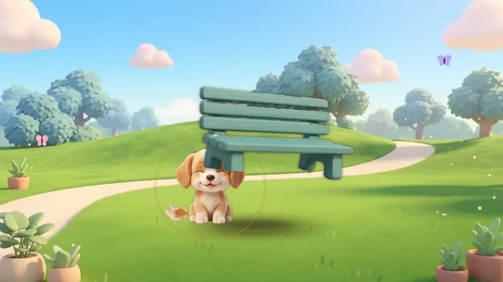
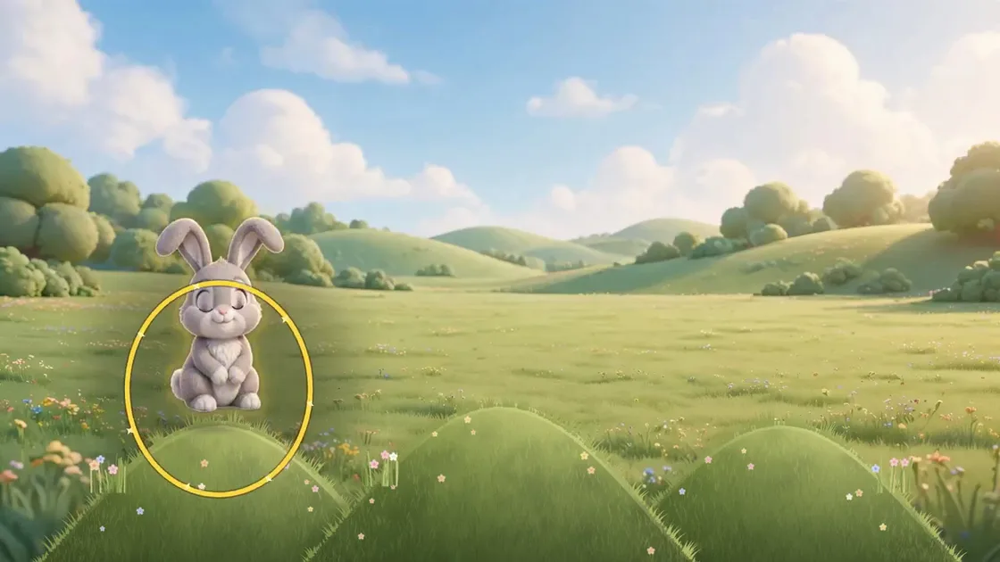
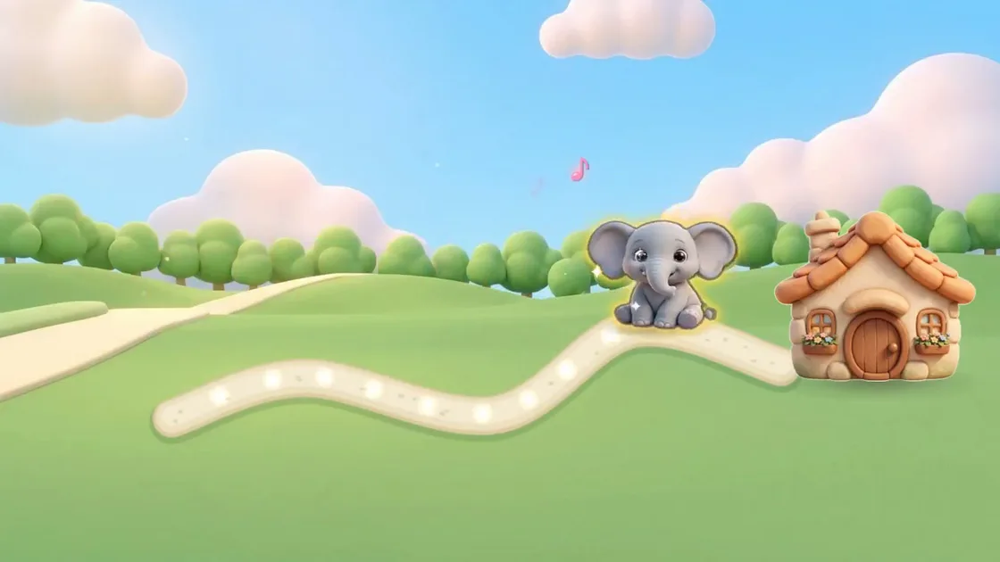
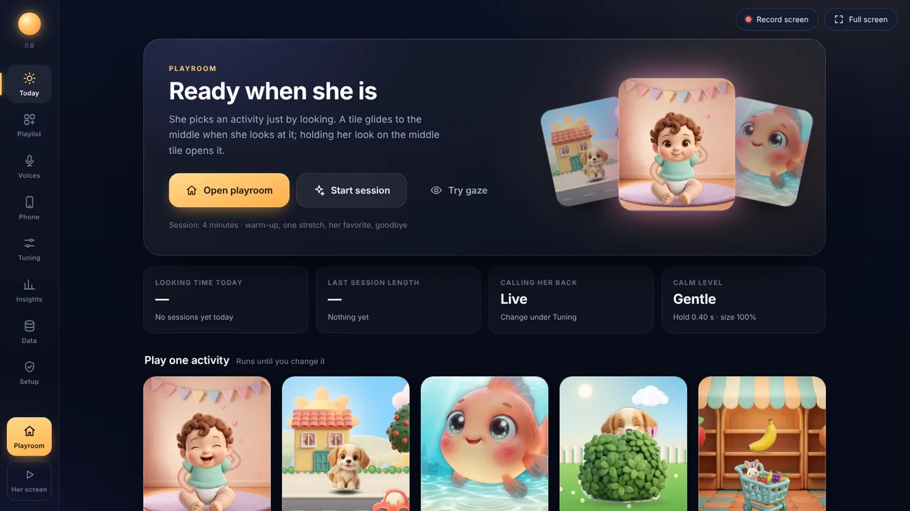
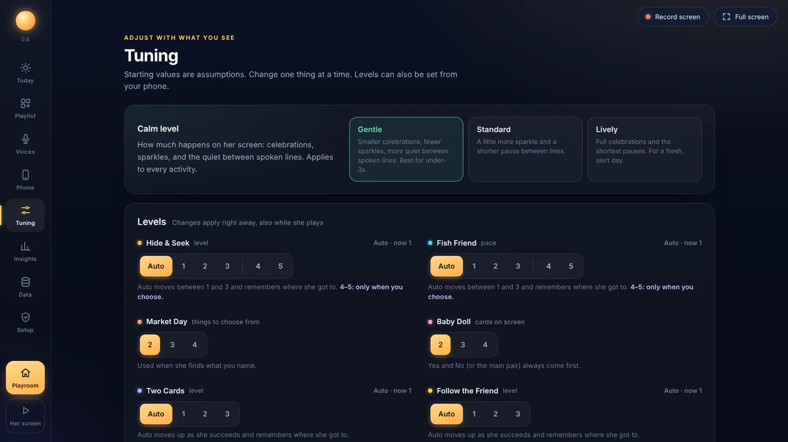

One look at a time
Simple enough for a first-time eye-gaze user. Rich enough to keep growing with them.
- 👁️
Look
A soft yellow glow follows wherever the child looks, so they can see their eyes are in charge.
- ⏳
Hold
Hold the look for a moment and a light runs around the edge. No rushing: the hold time adjusts to the child.
- 🎉
It comes alive
The animal wakes, the fish swims, the flower sings. A warm voice names what they found.
- 🌙
Calm by design
No flashing, soft sounds, one thing at a time, and quiet places to rest the eyes.
A playroom full of friends
Real screen recordings. The pointer stands in for the child's eyes.



Made for the grown-ups too
A caregiver screen tucked out of the child's way, with everything you need to make it work for your child.


- Tuned to your child. Calm level, hold time, size and difficulty, set by you. Activities step up and down on their own within the limits you choose.
- Your voice, your words. Record any line in your own voice and it plays instead of the built-in one.
- Gentle call-backs. When the child looks away, a friend calls them back once, softly.
- See what's working. Simple notes after each session: what they found, what they chose, how long they played.
- Optional phone remote. Start, pause and switch activities from your phone, and record lines from across the room.
- Works offline. Runs in the browser on the device. No account needed to play.
About the early beta
Honest and simple.
What you need
A Tobii Dynavox eye-gaze device (I-Series and similar), or a Windows computer with an eye tracker, and a child who is starting out with eye gaze or enjoys playful practice.
What testers do
Install a test version, play a few times a week, and tell us what worked and what didn't. A short message or a quick call is plenty.
What it costs
Nothing. The beta is free. Space is limited, and signing up doesn't guarantee a spot.
Good to know
It's an early version made for play and practice. It isn't a medical device or therapy, and it doesn't replace your child's therapists.
Join the early beta
Tell us a little about your setup. Please include:
- Your name and email
- Your device (for example, Tobii Dynavox I-13, or a laptop with a Tobii eye tracker)
- Your child's age range (for example, 2 to 4)
Please don't send medical details. We only need the basics above.
✉️ Email us to joinOr write to support@brightwinslab.com.
Questions
Which devices does it work with?
It's being built and tested on a Tobii Dynavox I-Series running Windows, and it should work on Windows computers with an eye tracker that moves the mouse pointer. It runs in Firefox, Edge or Chrome. Tablets and Macs aren't supported yet.
What age is it for?
It was designed with a toddler in mind, and it suits young children who are learning to use eye gaze. Older children who enjoy playful practice are welcome too.
Does it need the internet?
No. It plays fully offline. The optional phone remote needs Wi-Fi.
What about privacy?
Play happens on the device. If you pair the optional phone app, recordings and settings are backed up to a private cloud copy.
Is it affiliated with Tobii Dynavox?
No. This is an independent project by Bright Wins Lab. Tobii Dynavox is a trademark of its owner, and we mention it only to say which devices the beta is tested on.